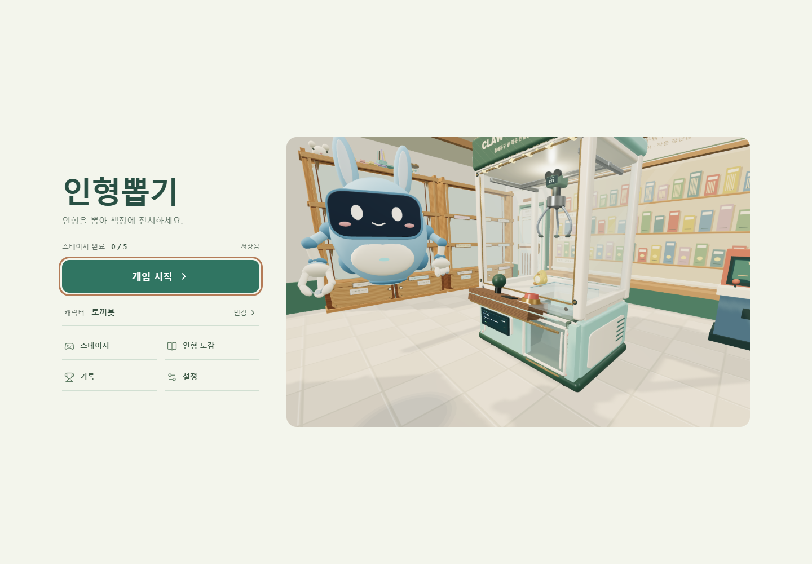

개발 중인 3D 인형뽑기 게임입니다. 집게를 움직여 인형을 뽑고, 스테이지를 진행하며 인형 도감을 채우는 흐름을 개발하고 있습니다.
Doll Toss
서비스 소개
주요 기능
- 집게 조작 — 3D 공간에서 집게를 움직여 인형 뽑기
- 스테이지 — 단계별 목표를 따라 게임 진행
- 인형 도감 — 수집한 인형과 캐릭터 확인
실제 화면

개발 중인 3D 인형뽑기 게임입니다. 집게를 움직여 인형을 뽑고, 스테이지를 진행하며 인형 도감을 채우는 흐름을 개발하고 있습니다.
